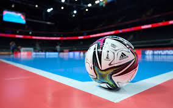
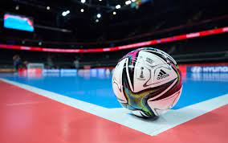

.png)
Por que participar do interclasse?
A competição durante o interclasse é o principal motivo no qual todos participam, a busca de ser a melhor sala em todos os esportes. Além de nos divertimos durante os esportes, criamos um espírito esportivo saudável, o levando para o resto da vida.
Se a escola tem uma longa tradição de competições interclasse, destaque o orgulho de fazer parte dessa tradição.
Participar de um interclasse permite interagir com colegas de classe, conhecer novas pessoas e construir amizades.
Principais esportes do interclasse

 

Vôlei
Vôlei
Esporte de equipe jogado em uma quadra, onde duas equipes tentam marcar pontos golpeando a bola sobre a rede no lado oposto da quadra, sem deixá-la tocar no chão de seu próprio lado.
Ultimate Frisbee
Esporte de equipe que usa um disco voador (frisbee) e envolve passes entre jogadores para marcar pontos, proibindo o movimento com a posse da bola. É um esporte rápido e dinâmico.
Futsal
Variação do futebol jogada em uma quadra menor e com times menores. É conhecido por sua velocidade e habilidades técnicas, com regras adaptadas para quadras internas.
Como o Interclasse funciona?
Cada turma é separada em países selecionados de um sorteio, a turma ira representar este país até o final do interclasse
Para vencer no interclasse, é necessário adquirir pontos, eles podem ser ganhos ao longo dos esportes e de vez em quando, em gestos de caridadesem doações feitas pela escola
Não há somente os esportes citados acima, o interclasse possui uma variedade de esportes, como: tênis de mesa, uno, xadrez e entre outras modalidades que podem ser jogadas para ganhar pontos e ser a melhor turma da escola